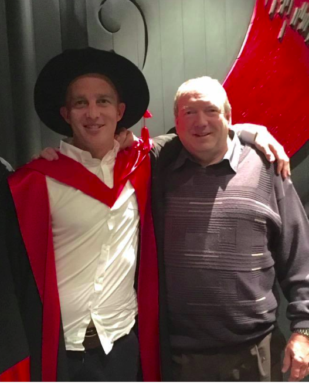

This is the personal site of Nicholas Ham. I recently completed a doctorate in mathematics at the University of Tasmania, which I did under the supervision of Des FitzGerald (utas profile, WARP) and Peter Jarvis (personal site, utas profile, WARP, wikipedia page).
On top of completing a pure mathematics major during my undergraduate degree, I also completed majors in computer science and economics. Furthermore I contributed to designing and building an international programming competition sponsored by Google, and have experience teaching both mathematics and economics classes at the undergraduate level.
Note: Financial constraints are currently limiting my ability to (amongst other things): do research, write up/publish worthy results and contribute in other places. While most of my research activities do not incur much of a financial cost, I do nevertheless have expenses for rent, food, power, conference travel etc., consequently I am temporarily accepting donations via PayPal until I have regular funding coming in again. If we have previously crossed paths and you would prefer to transfer money directly, please feel free to contact me for my bank account details.

email: nicholas.charles.ham[at]gmail.com
UTAS - Maths & Physics: http://www.utas.edu.au/profiles/staff/maths-physics/nick-ham
UTAS - Economics: http://www.utas.edu.au/profiles/staff/economics/nick-ham
arXiv: http://arxiv.org/find/math/1/au:+Ham_N/0/1/0/all/0/1
github: https://github.com/n-ham